Seit 2024 arbeite ich als freier Brand Designer mit eigenem Studio, als direkter Partner für Unternehmen oder als externer Spezialist für Agenturen wie Jung von Matt und der Wirz Group. Mit über 10 Jahren Erfahrung habe ich Marken wie Swisscom, ifolor und Migros begleitet: von Rebranding und Corporate Identity bis zum Aufbau gruppenweiter Brand-Portale. Mein Fokus liegt darauf, Markenstrategien in skalierbare visuelle Systeme zu übersetzen – von Start-ups über KMU bis hin zu etablierten Grosskonzernen.
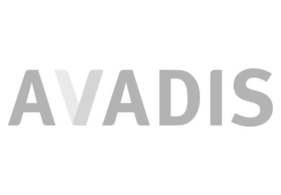
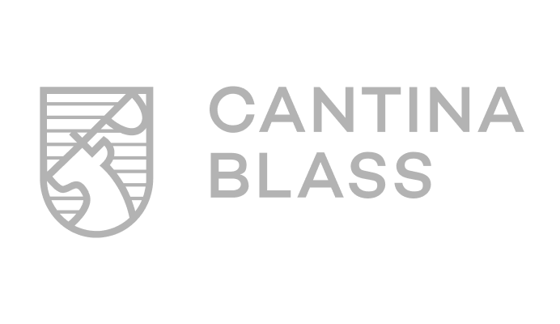
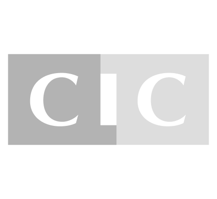
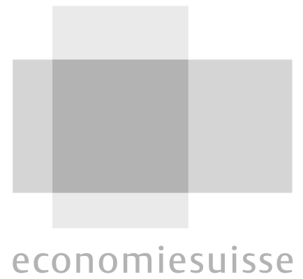
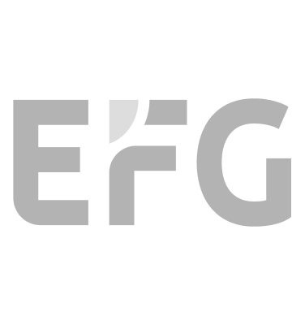
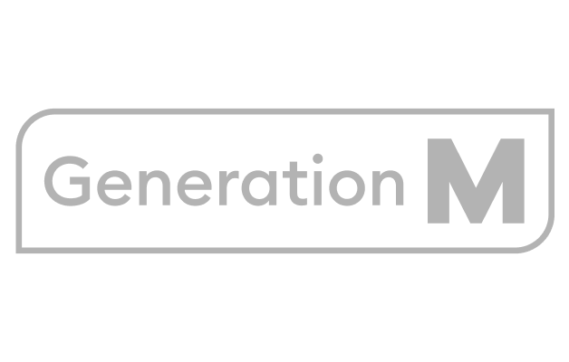
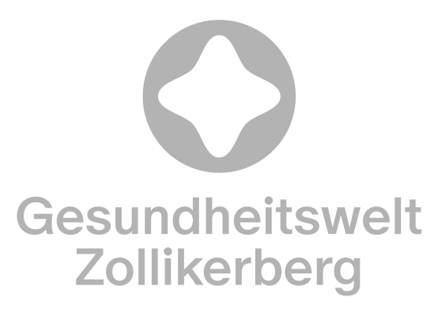
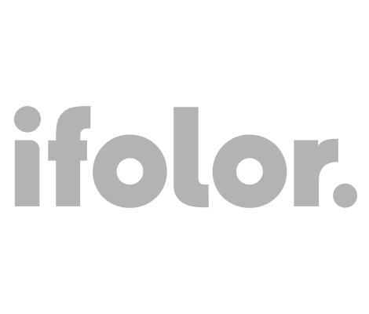
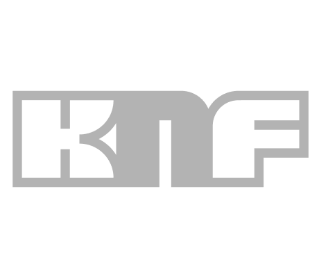
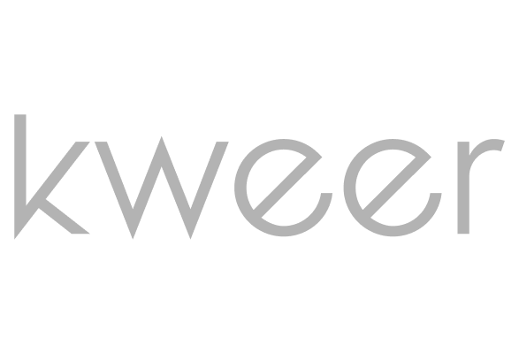
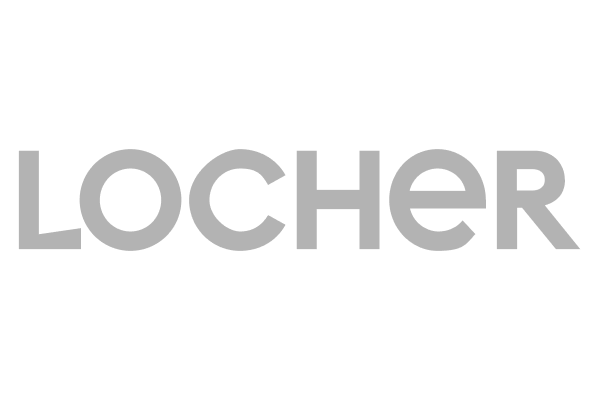
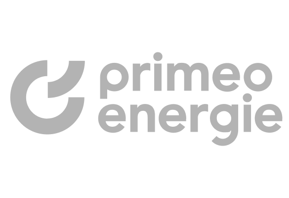
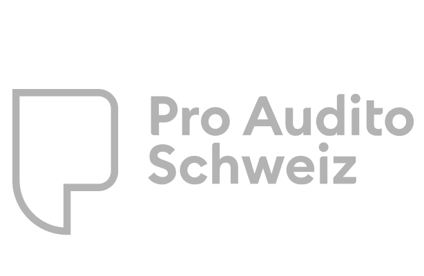
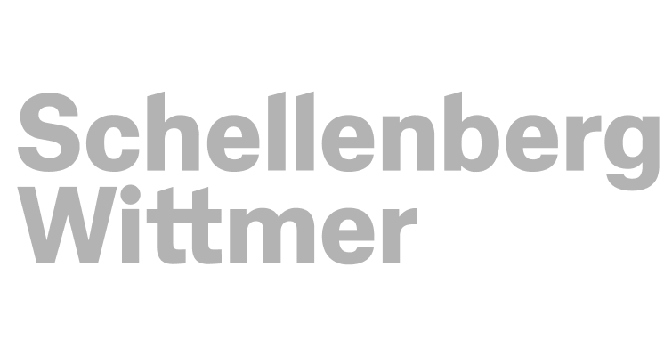
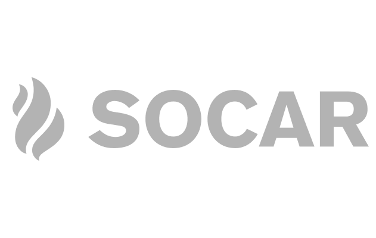
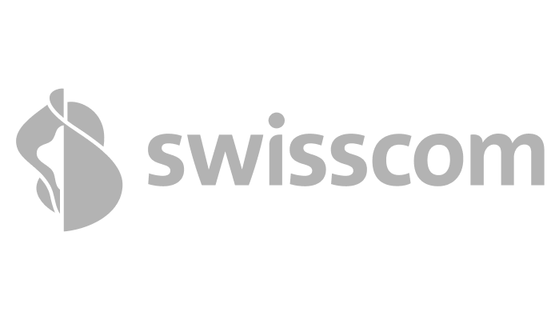
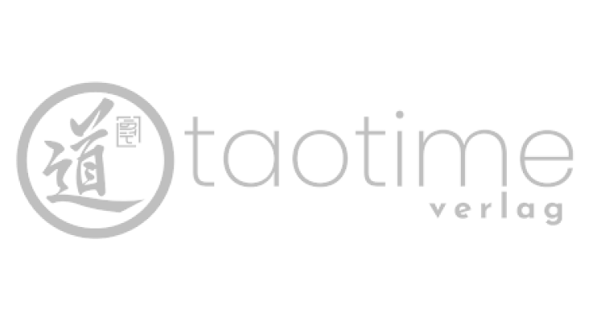
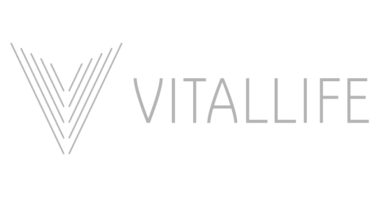
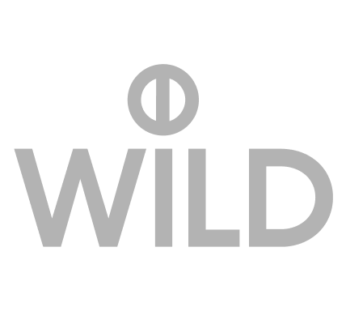
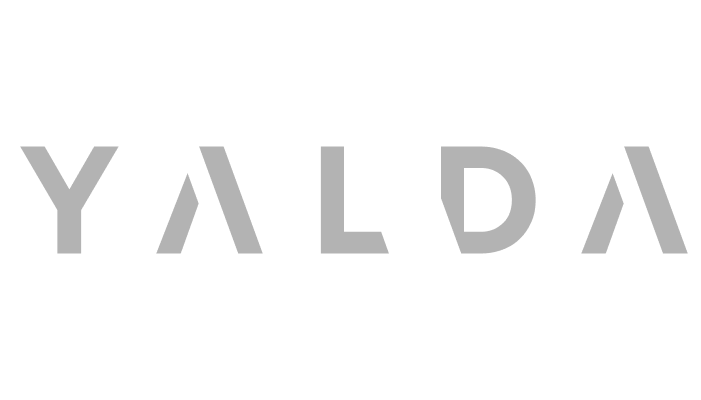